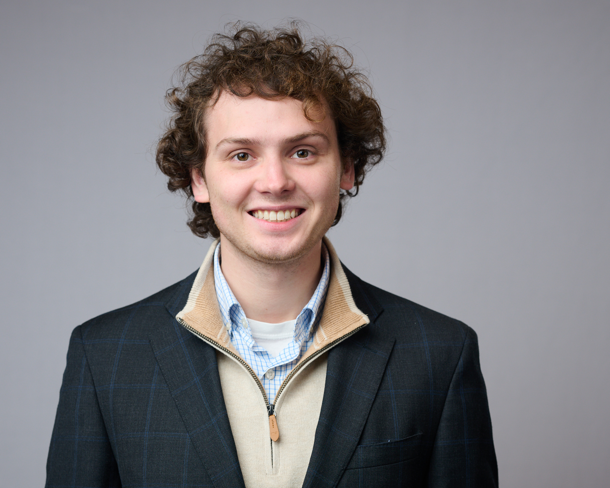

PhD Graduate Student at the University of California San Diego
Hi! My name is Alex, and I am a Physics PhD Student at UC San Diego. I am most interested in fundamental physics. I currently study applications of machine learning for use in experimental rare nuclear event searches. In my freetime, I enjoy reading classical Russian literature and popular science books.
I currently work under Professor Aobo Li at UCSD Rare Labs. We investigate applications of machine learning for use in the KamLAND-Zen experiment. I previously worked under Professor Kate Scholberg at Duke University, where we studied the Neutrino Mass Hierarchy Problem.
Migala, A., Ku, E., Li, Z., & Li, A. (2024). Real-time Position Reconstruction for the KamLAND-Zen Experiment using Hardware-AI Co-design. https://arxiv.org/abs/2410.02991
American Physical Society Global Summit 2025
6th Joint Meeting of the APS Division of Nuclear Physics and the Physical Society of Japan